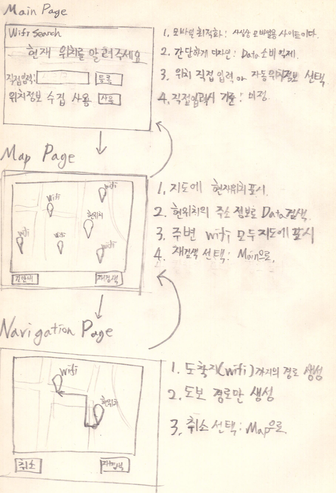

2013726059공병조
이전에 작성한 이미지와 거의 동일한 구조

구현해야 하는 기능
-
입력 : 사용자의 위치 좌표 확인 (위치정보 확인 api 활용)
-
처리 : 사용자 좌표 기준 일정범위 안에 있는 무료 와이파이 좌표 획득 (db 검색)
-
출력 : 지도에 모두 표시, 클릭한 경우 길안내 호출 (map에 marker추가, clickListener 표시)
*DB 관련
데이터가 따로 api로 존재하지 않는 테이블 데이터다.
게다가 필드가 한글인 문제도 있다.
그래서 sqlite db로 만든 다음 사용하기로 했다,
대화형 프로토타입(미완성) - 지도와 마커 표시까지만 완료. 오류가 너무 많다.
https://pioneer-team.github.io/HCIproject/web/main
문제점
- DB를 사용할 수가 없다. 도저히 사용 방법을 알 수가 없음.
- 마커가 여러개 표시되지 않는다.
- 자체 길찾기를 지원하지 않는다.
해결 방안
- sqlite3 db를 js를 통해 사용할 수 있는 온갖 방법이 다 오류로 끝났다. 교수님과 상담 필요.
- 네이버 지도api에 마커를 여러개 찍을 수 없었다. 애초에 메뉴얼에 주석도 없는데 공식 메뉴얼 예제를 복붙해도 통하지 않는다. 연구 필요.
- 좌표값을 들고서 네이버 길찾기 사이트로 리다이렉트 시킨다.
*무료 wifi API
무료 wifi 위치를 제공하는 api는 자동화된 응답을 제공하는 것이 적다.(좁은 범위를 대상으로 하는 api는 약간 있음)
만약 db를 이용할 수 없을 경우 범위를 좁혀서 서울시만 가능하게 하는 식으로 할 수밖에 없을 것이다.
사실상 db에서 좌표 가져오는 문제만 해결되면 나머지 구현은 쉬울텐데...
프로토타입 미완성으로 진행되지 못함
구글 설문지를 이용, 설문지 작성과 음성 녹음으로 진행할 계획이었다.
직관성과 이용상의 불편함에 대해서 조사할 계획이었다.
개발 진행 과정에서 위치정보 수동입력에 대한 이야기가 있었다.(위치정보 사용을 꺼리는 클라이언트를 위해서)
참고자료
https://navermaps.github.io/maps.js/docs/index.html
지오로케이션 api
네이버맵 api
sqlite3(db.db)
github
부트스트랩
jquery
전국 무료 wifi 테이블